№ 001
Grove
Spriglet
A leaf-eared fawn that restores health and builds its defences.
Evolution line
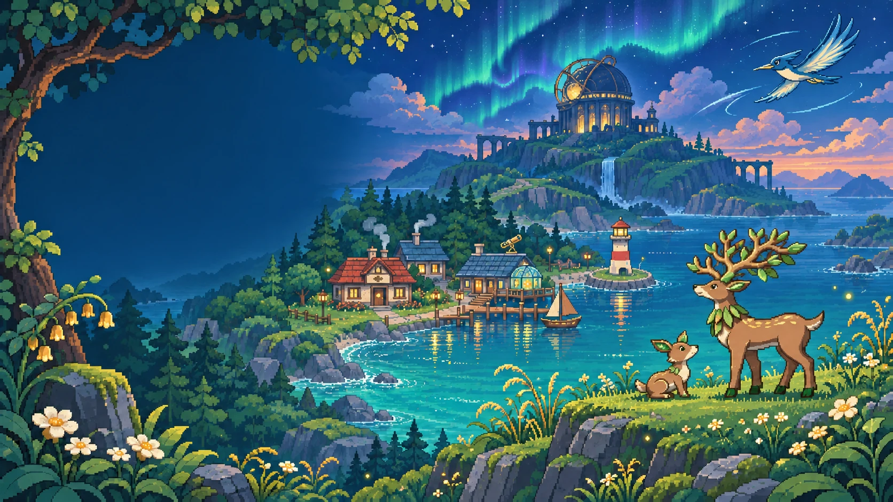
The lighthouse has gone still. Choose a field partner and follow the lost rhythm of Asterra from the coast to the stars.
Free creature-collecting RPG · Play in your browser
The region / Asterra
Take a travelling case down to the Brinewick meadow. Your first partner will help you follow the creature tracks beyond the village.
Across Asterra, creatures store natural energy in their bodies. The Stilllight Society wants to quiet its fluctuations. As habitats change, your research leads from a seaside lodge to a dormant celestial observatory.
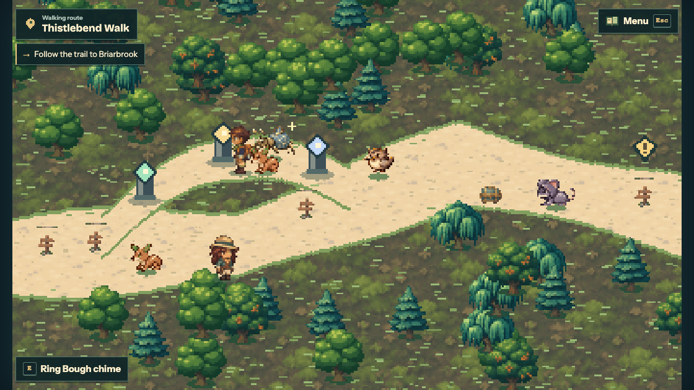
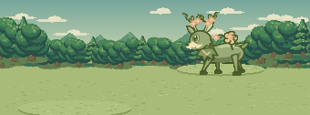
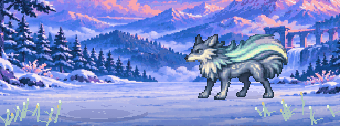
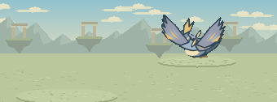
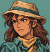
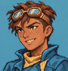
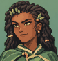
Field Atlas / Brinewick Village
“Three travelling cases, three very different partners. Who will you take into the field?”
A leaf-eared fawn that restores health and builds its defences.

A warm-bellied burrower that withstands physical hits and strikes back hard.
A quick shorebird that outpaces its opponents with focused attacks.
Catalogue 300 species across ten habitats. All three starter families can join the same expedition.
Creature design / Evolution studies
Watch a thread become a wing pattern, a swimming tail give way to cupped hands, and a stone core become a working pendulum.
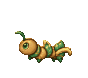
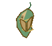
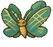
Fuzzlet spins a thread from its abdomen. Loomoth hangs in a shuttle of silk. Tapestria’s open wings carry the same woven bars.
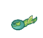
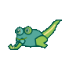
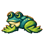
Dewbit paddles with a leaf-shaped tail. Poolpalm grows its first webbed hands. Miremitt cups seedlings in its broad palms above the water.
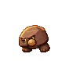
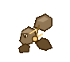
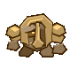
Ticlet’s core peeks through a seam. In Pendulor it swings on a short stalk. Horolume’s chest pillars leave it room to swing freely.
All 300 creatures have distinct front and rear battle art. Look for the jade horns on Torhorn, the bell fins on Chimefin, and the fossil ridges on Borealbrawn as they turn to face a foe.
Each habitat has its own melody. The score switches when a battle starts, and each species has a synthesised call. Enable music and effects separately in Settings.
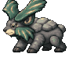
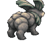
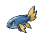
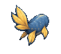
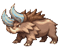
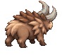
Battle journal / Glasswater Bay
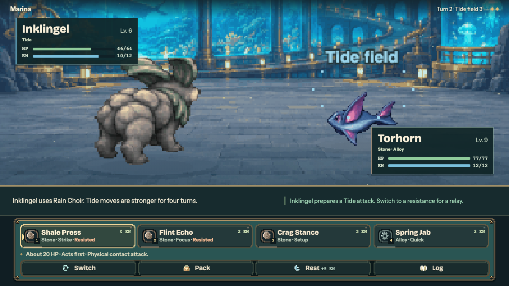
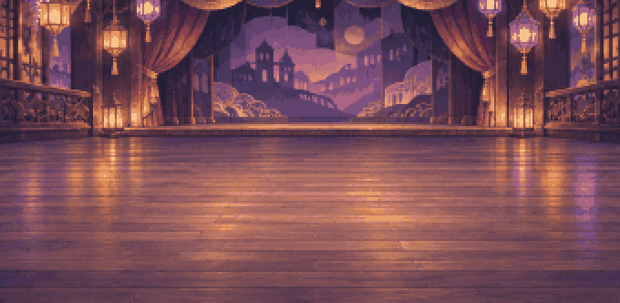
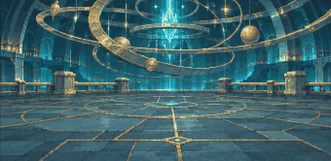
Give each partner up to four moves. A fast attacker can open the fight, a defensive partner can take a hit, and a free lodge tutor lets you change a moveset between routes.
Send in a companion that resists the attack your opponent is preparing. It gains three energy and hits 25% harder on its next successful attack.
A wild creature is easier to capture at low health or under a condition. Follow the gold marker in Brinewick to practise with Gravlet and watch the catch chance rise as you weaken it.
League register / Asterra
Each settlement has a leader, a puzzle and a badge. Select a badge to meet its leader and learn what awaits inside.
Briarbrook Gym / Grove
Rotate the greenhouse irrigation channels to open a path through the vines. Fern’s team wears opponents down with status effects and recovery.
Canopy Badge · Vine-clearing equipment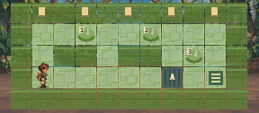
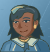
Tideglass Gym / Tide
Change the aquarium’s water level to align its floating walkways. Marina keeps her team afloat with defensive switches and weather support.
Current Badge · Water traversal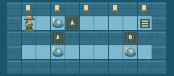
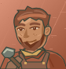
Cindermill Gym / Flame
Work the furnace switches to cross the ceramics foundry. Calder favours steady offensive pressure.
Ember Badge · Heavy-object movement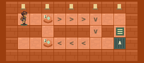

Voltspire Gym / Storm
Connect the power station circuits to bring its lifts online. Iona controls the pace with speed changes and disruptive conditions.
Dynamo Badge · Expanded fast travel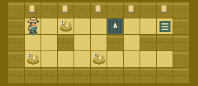

Slatehaven Gym / Stone
Shift the quarry museum’s fossil displays onto their pressure plates. Petra gives her durable partners time to build their defences.
Strata Badge · Climbing equipment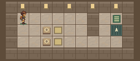

Frostmere Gym / Frost
Slide between frozen mechanisms and turn the observatory mirrors. Soren builds his attacks around the changing weather.
Crystal Badge · High mountain pass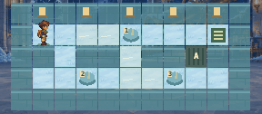
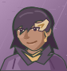
Veilmarket Gym / Spirit
Change the stage lights to reveal doors in the theatre’s shadow scenery. Nyra changes the field and slows down opponents with conditions.
Lantern Badge · Hidden ruin passages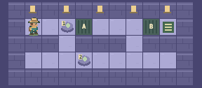
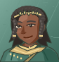
Astral Crown Gym / Radiance
Connect the conservatory’s constellations to cross its floating platforms. Solenne tests your whole team before the observatory finale.
Zenith Badge · Championship qualification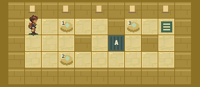
Beyond the eighth badge, the Asterra Championship awaits with four specialists and a champion.
Legendary encounters / Shrine surveys
Ten legendary creatures have their own shrines. Three belong to the land, sea and sky.
Use the equipment you earn from the League to reach quiet sanctuaries on foot, by skiff or on the wind. Read each shrine’s inscription, perform its rite and seek the guardian. You can return for another encounter.
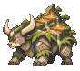
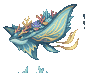
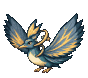
Expedition manual / Research division
Play with a keyboard, mouse or touch screen. Open Settings in the expedition menu to rebind keys, adjust text speed or turn on reduced motion.
Restore the whole party, organise storage and relearn moves for free. Your last lodge is also where the expedition resumes after a defeat.
The game autosaves in this browser at safe milestones. Open Expedition menu → Save → Export backup to keep a copy or carry your team to another device. Use Import backup to restore it.
Download the standalone game and open it in a modern browser. To continue a web expedition offline, export your save first and import it in the downloaded game.
Brinewick Village / Starting lodge
Meet Researcher Oriel, open your first travelling case and step into the meadow.
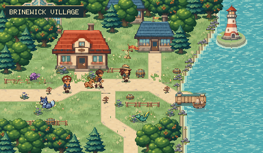
▶ Play here